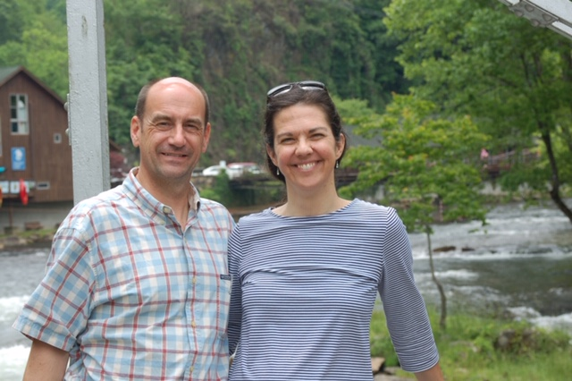

 Dear Friend,
Thank you so much for investing in our campaign for the Durham County Board of Commissioners. I know it is an uphill battle to run as a moderate who cares about the impact of rising taxes on our less affluent residents. I appreciate your donation, your encouragement and your trust in my campaign.
Sincerely,
Patrick Byker